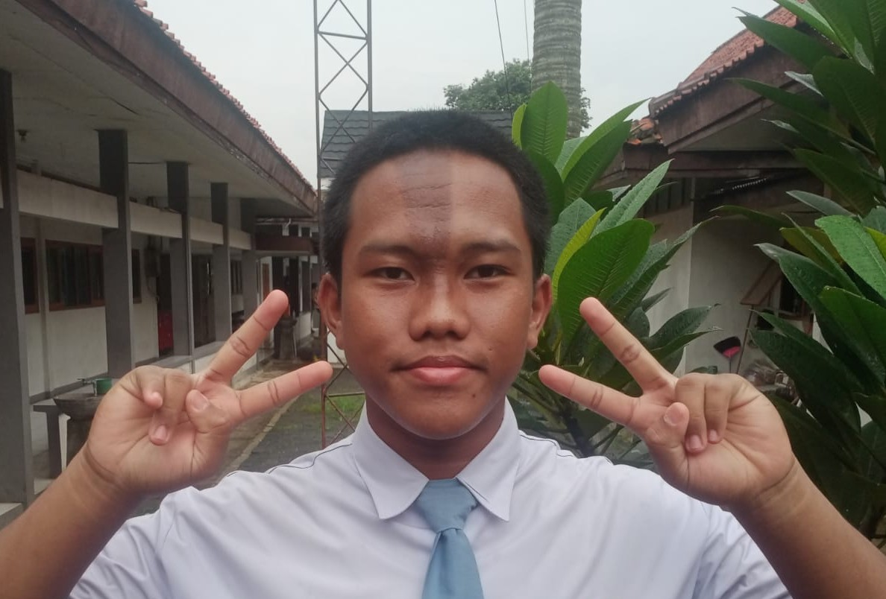
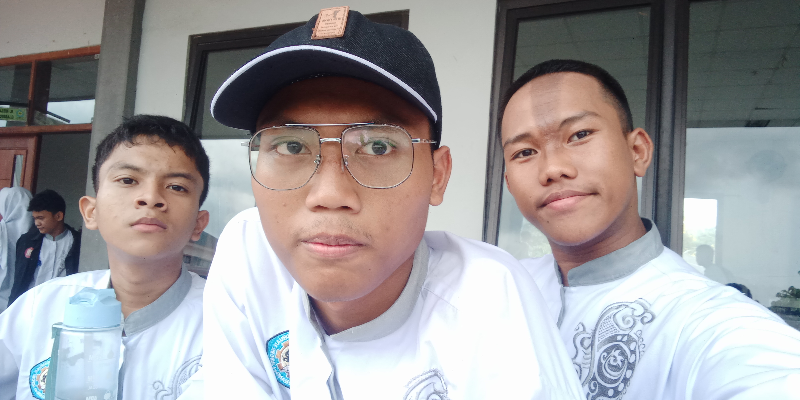

WEBSITE ARFIAN
"Dimana pun kamu berada, Tetaplah kamu selalu bersyukur"
|
|
|---|---|
| Beranda Tentang Saya Sekolah Lagu | |
Tentang saya(perkenalan secara singkat ya)   search : foto saya
Halo, perkenalkan nama saya Arfian Syaputra, biasa dipanggil Pian atau Arfian. Saya lahir pada tanggal 31 Januari 2009, di Jakarta. Umur saya 17 tahun. saya sekarang tinggal di daerah yang memang banyak perumahan dan saya tingglnya di sebuah kontrakan. untuk alamat lengkapnya di Gg.Keamilan II, Kebon Nanas, RT.009/RW.007, Cikokol. oiya, saya anak pertama dari 2 bersaudara. Saya bersekolah di SMK Negeri 1 Kota Tangerang, di sana aku memiliki sahabat dan teman yang baik banget. Guru, petugas kebersihan, marbot dan seluruh warga sekolah disana sangat baik seperti orang tua saya di rumah, jadi saya ingin betah berlama - lama di sana. jurursan saya adalah DKV (Desain Komunikasi Visual) kelas 12. Udah mau berpisah lagi aja sama sekolah dan warga sekolah yang sangat saya banggakan lagi. apalagi guru DKV yang saya kenali. Insyaallah, saya sering ke sana lebih lama lagi. Oiya saya hampir lupa, hobi saya menggambar, bermain game (terutama game battle shot), bersepeda, mendengarkan musik. kalau saya masuk DKV itu karena hobi saya sesuai dengan jurusan ini. ternyata, DKV se-asyik itu belajar desain, animasi, coding, fotografi dan lainnya. Untuk kepribadian saya, saya memang mudah merasa bosan dalam hal apapun yang dilakukan secara berulang, saya kalau tidak ada yang tidak penting ya saya gak mau ikut gabung (makanya kalau ada kegiatan sekolah seperti maulid, agustusan, dll saya kadang tidak masuk sekolah). Selain itu, kalau memang saya suka ke seseorang perempuan biasanya suka usil atau melakukan hal random yang buat perempuan itu marah atau jengkel. lalu yang terakhir, saya biasanya temenan tidak memandang apapun (berteman dengan siapa saja) asalkan orang tersebut baik dan menerima kekuranganku (kalau ketahuan gak bener ke saya, paling saya iyain terus saya tinggalin). kalau udah akrab, saya akan mengenangnya suatu saat nanti kita akan bertemu lagi di lain waktu dan mengenang kejadian selama saya dan sahabat/teman saya pernah alami. Oiya, demikian perkenalan singkat dari saya. saya ingin mengucapkan terima kasih kepada orang - orang yang memang sudah berjuang bersama dan menemaniku hingga saat ini. saya juga mohon maaf jika dalam proses ini saya membuat kalian kesal, atau yang membuat sakit hati denganku. saya juga ingin mendo'akan semuanya, semoga bisa menjadi orang yang baik, dilimpahkan rezekinya, sehat wal afiat dan panjang umur. semoga semua kegiatan yang kalian lakukan itu membawa keberkahan di jalan-Nya. terimakasih ya sudah memahami dan menemaniku hingga saat ini "perkenalan personal murid DKV"
|
Tautan Eksternal |
|
(Copyright by arfian209@gmail.com, 2026) |
|